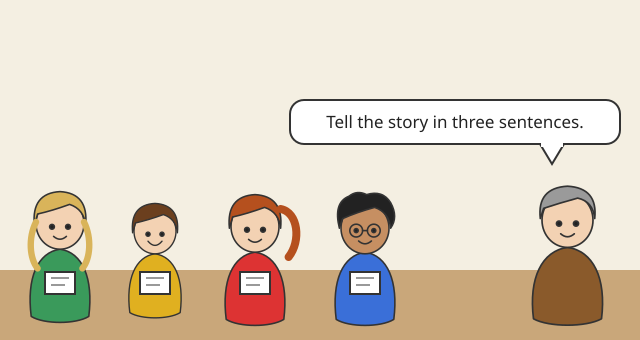
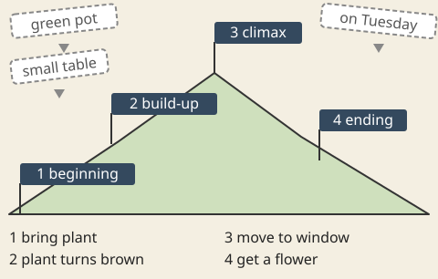

Zusammenfassen: nur das Wichtigste
Mit einem KI-Tutor lernen
Ein KI-Tutor erklärt dir diese Seite und hilft dir bei den Aufgaben. Wähl deinen Assistenten:
Mit Claude öffnen Mit ChatGPT öffnen Mit Mistral Vibe öffnen
Du nutzt dein eigenes Konto beim Anbieter. Der Assistent ist kein Angebot von lernapps.net: lernapps liefert nur Inhalte und Aufgaben. Die Wahl gilt für alle Seiten, nur auf diesem Gerät.
Ein Zettel mit drei Sätzen

Von links: Sophie (Zöpfe), Peter (gelbe Jacke), Ellie (roter Pferdeschwanz), Amir (Brille) und Mr Hill (graue Haare). Jedes Kind hat den Zettel von Mr Hill.
Quelle: eigene Zeichnung. Lizenz: CC-BY-4.0.Mr Hill gibt jedem Kind einen Zettel. Darauf steht: „Tell the story in three sentences.“ Ellie flüstert: „Nur drei Sätze?“ Mr Hill lächelt. In einer Geschichte steht viel, aber du schreibst nur das Wichtige auf. Zuerst liest Sophie eine kurze Geschichte.
Aufgabe
Lösung
Sophie left her umbrella at home richtige Antwort
Hier beginnt das Problem.
Amir gave her his umbrella richtige Antwort
So löst sich das Problem.
They walked to school together richtige Antwort
So endet die Geschichte.
The umbrella is big and blue
Das ist eine Einzelheit, kein Ereignis.
Mr Hill smiled at them
Das ist eine Nebensache.
Wichtig ist, was die Geschichte weiterbringt.
Das kannst du danach: Du findest in einer Geschichte das Wichtigste und schreibst es in wenigen Sätzen auf. Du lässt Einzelheiten und deine Meinung weg.
Diese Wörter sind neu auf dem Klassenzimmer-Poster.
| Wort | Bedeutung |
|---|---|
| summary | Zusammenfassung |
| detail | Einzelheit |
| goldfish | Goldfisch |
| bowl | Schale |
| umbrella | Regenschirm |
Nur das, was am Geschichtenberg hängt
Mr Hill liest eine andere Geschichte vor: „On Tuesday Mr Hill brought a small plant in a green pot to school. The plant stood on a table, and the children gave it water every day. After a week the plant was brown. Ellie read about plants and put it near the window. Two weeks later the plant had a yellow flower.“

Der Geschichtenberg zur Geschichte von der Pflanze. An den Fähnchen hängen die Hauptereignisse. Die Kästchen mit gestrichelten Rändern sind Nebensachen: Sie fallen herunter.
Quelle: eigene Zeichnung. Lizenz: CC-BY-4.0.Eine Zusammenfassung (englisch: summary) ist der Geschichtenberg in Sätzen. Du nimmst nur die Hauptereignisse der Stationen. Alles andere fällt vom Berg: Einzelheiten wie Farben oder Orte, deine Meinung und Sätze, die du Wort für Wort aus der Geschichte nimmst.
Merke
Eine Zusammenfassung ist kurz und hat nur die Hauptereignisse. Du schreibst sie in eigenen Worten im simple past, wie die Geschichte. Die Stichwörter am Berg stehen im simple present, die Sätze der Zusammenfassung im simple past. Es fehlt kein Teil der Geschichte, es steht keine Meinung darin (nicht „It was great.“), und es steht nicht nur der Anfang da. Drei Sätze reichen: Anfang, Problem und Ende. Beginning und build-up können zusammen in einem Satz stehen.
Finde und schreibe das Wichtigste
Aufgabe
Lösung
Peter's goldfish was not in her bowl. Peter looked under the table and behind the sofa. Then he went to the kitchen. Goldie was in a blue cup by the window. Peter put her back
Zu lang, hier stehen viele Einzelheiten.
Peter's goldfish was in a cup. It is a funny story and I like Peter.
Das ist eine Meinung, und der Anfang fehlt.
Peter's goldfish was not in her bowl. Peter looked under the table and behind the sofa.
Das ist nur der Anfang, das Ende fehlt.
Goldie was not in her bowl. She was in a cup in the kitchen. Peter put her back in the clean bowl richtige Antwort
Alles Wichtige, kurz und ohne Meinung.
Kurz und mit allem Wichtigen.
Aufgabe
Lösung
Richtige Antwort: Goldie was in a cup. – Ereignis, kommt hinein; The cup was blue. – Einzelheit, bleibt draußen; It is a funny story. – Meinung, bleibt draußen
Nur Ereignisse kommen in die Zusammenfassung.
Aufgabe
Lösung
Richtige Antwort: 1. Peter lost his shoe at school., 2. He looked for it everywhere., 3. A girl found it in the garden.
Erst das Problem, dann die Suche, dann die Lösung.
Aufgabe
Lies: „On Thursday afternoon, in the cold park, Amir lost his new blue football. After an hour a man with a small dog found it behind a big tree.“ Schreibe die zwei Hauptereignisse als kurze Sätze.
- Amir · lose · football
- man · find · football · tree
Lösung
- Amir lost his football in the park. (auch richtig: Amir lost his football in the cold park.; Amir lost his football.; Amir lost his ball in the park.; Amir lost his ball in the cold park.; Amir lost his ball.; Amir lost the football in the park.; Amir lost the football in the cold park.; Amir lost the football.; Amir lost the ball in the park.; Amir lost the ball in the cold park.; Amir lost the ball.; Amir lost his new football in the park.; Amir lost his new football in the cold park.; Amir lost his new football.; Amir lost his new ball in the park.; Amir lost his new ball in the cold park.; Amir lost his new ball.; Amir lost the new football in the park.; Amir lost the new football in the cold park.; Amir lost the new football.; Amir lost the new ball in the park.; Amir lost the new ball in the cold park.; Amir lost the new ball.; Amir lost his blue football in the park.; Amir lost his blue football in the cold park.; Amir lost his blue football.; Amir lost his blue ball in the park.; Amir lost his blue ball in the cold park.; Amir lost his blue ball.; Amir lost the blue football in the park.; Amir lost the blue football in the cold park.; Amir lost the blue football.; Amir lost the blue ball in the park.; Amir lost the blue ball in the cold park.; Amir lost the blue ball.; Amir lost his new blue football in the park.; Amir lost his new blue football in the cold park.; Amir lost his new blue football.; Amir lost his new blue ball in the park.; Amir lost his new blue ball in the cold park.; Amir lost his new blue ball.; Amir lost the new blue football in the park.; Amir lost the new blue football in the cold park.; Amir lost the new blue football.; Amir lost the new blue ball in the park.; Amir lost the new blue ball in the cold park.; Amir lost the new blue ball.)
- A man found the blue football behind a tree. (auch richtig: A man found the blue football behind the tree.; A man found the blue football behind a big tree.; A man found the blue football.; A man found the blue ball behind a tree.; A man found the blue ball behind the tree.; A man found the blue ball behind a big tree.; A man found the blue ball.; A man found the new football behind a tree.; A man found the new football behind the tree.; A man found the new football behind a big tree.; A man found the new football.; A man found the new ball behind a tree.; A man found the new ball behind the tree.; A man found the new ball behind a big tree.; A man found the new ball.; A man found the football behind a tree.; A man found the football behind the tree.; A man found the football behind a big tree.; A man found the football.; A man found the ball behind a tree.; A man found the ball behind the tree.; A man found the ball behind a big tree.; A man found the ball.; A man found Amir's blue football behind a tree.; A man found Amir's blue football behind the tree.; A man found Amir's blue football behind a big tree.; A man found Amir's blue football.; A man found Amir's blue ball behind a tree.; A man found Amir's blue ball behind the tree.; A man found Amir's blue ball behind a big tree.; A man found Amir's blue ball.; A man found Amir's new football behind a tree.; A man found Amir's new football behind the tree.; A man found Amir's new football behind a big tree.; A man found Amir's new football.; A man found Amir's new ball behind a tree.; A man found Amir's new ball behind the tree.; A man found Amir's new ball behind a big tree.; A man found Amir's new ball.; A man found Amir's football behind a tree.; A man found Amir's football behind the tree.; A man found Amir's football behind a big tree.; A man found Amir's football.; A man found Amir's ball behind a tree.; A man found Amir's ball behind the tree.; A man found Amir's ball behind a big tree.; A man found Amir's ball.)
Aufgabe
Hör zu und schreibe, was du hörst.
- KI
- KI
- KI
Lösung
- Ellie wrote only the big events.
- Sophie left out the small things.
- Peter did not know the end of the story.
Selbst sagen und zusammenfassen
Aufgabe
Hör zu, sprich nach und nimm dich auf. Vergleiche dann mit dem Original.
Tipp
Hör zu. Sprich dann langsam nach.
- Who helped in the story?KI
- What was the problem?KI
- How did the story end?KI
Zum Aufnehmen braucht diese Aufgabe JavaScript. Die Beispiele kannst du auch ohne anhören.
Lösung
- Who helped in the story?
- What was the problem?
- How did the story end?
Offene Aufgabe
Denke an einen Film oder ein Buch, das du gut kennst. Fasse es auf Englisch in drei Sätzen zusammen: Anfang, Problem und Ende.
Tipp
Die App bewertet nicht. Prüfe anhand der Punkte.
Eine gute Antwort enthält:
Lösung
A girl lost her book on the bus. The driver found it after school. She got it back the next day.
Wie es weitergeht
Mr Hill sammelt die Zettel ein und liest ein paar vor. Die Kinder merken, dass drei Sätze reichen. Auf der nächsten Seite erzählst du eine Geschichte in eigenen Worten nach, Station für Station.